승강기산업기사 (2006-03-05 기출문제)
1과목: 승강기개론
1. 유압 엘리베이터에서 간접식의 특징이 아닌 것은?
- 실린더를 넣는 보호관이 불필요하다.
- 승강로는 실린더를 넣는 만큼 넓다.
- 실린더를 점검할 수 없다.
- 비상정지 장치가 필요하다.
(정답률: 57%)

2. 상부틈 및 피트의 깊이를 정하는 기준이 되는 것은?
- 적재하중
- 카의 행정
- 승강기 용도
- 정격속도
(정답률: 74%)
3. 엘리베이터의 가이드 레일 설치 시에 레일 브라켓트(Rail Bracket)의 간격을 작게 하면 동일한 하중에 대하여 응력도 및 휨도는 어떻게 되겠는가?
- 응력도와 휨도가 모두 작아진다.
- 응력도와 휨도가 모두 커진다.
- 응력도는 커지고 휨도는 작아진다.
- 응력도는 작아지고 휨도는 커진다.
(정답률: 59%)
4. 카가 고장으로 인하여 최하층을 통과하여 피트로 떨어졌을 때 충격을 완화시켜 주기 위해 설치되는 안전장치는?
- 비상정지장치
- 제동장치
- 완충장치
- 조속장치
(정답률: 78%)
5. 로프식 엘리베이터에서 정전 시 예비조명장치의 밝기는 램프중심으로부터 2m 떨어진 수직면상에서 측정하여 몇 룩스 이상으로 설치하여야 하는가?(관련 규정 개정전 문제로 여기서는 기존 정답인 1번을 누르면 정답 처리됩니다. 자세한 내용은 해설을 참고하세요.)
- 1
- 2
- 3
- 4
(정답률: 66%)
6. 엘리베이터 권상전동기의 제어에서 3상 유도전동기의 입력전압과 주파수를 동시에 제어(인버터 제어)하는 방식은?
- 교류 2단속도제어방식
- 교류 궤환제어방식
- VVVF 제어방식
- 워드레오나드방식
(정답률: 68%)
7. 전동덤웨이터에 대한 설명으로 옳은 것은?
- 서적, 음식물 등 소형화물의 운반에 적합하게 제작된 엘리베이터로서 사람은 탑승할 수 없는 것이다.
- 자동차운반에 적합하게 제작된 엘리베이터이다.
- 발판을 동력에 의해 구동시켜 오르내리게 한 것이다.
- 발판을 동력에 의해 구동시켜 수평 이동시키는 것이다.
(정답률: 74%)
8. 엘리베이터 안전장치 중 엘리베이터가 정격속도를 현저히 초과하여 과속으로 운전될 때 전원을 차단시켜 엘리베이터 운행을 정지시키는 안전장치는?
- 완충기
- 세이프티 슈
- 종점 스위치
- 조속기
(정답률: 74%)
9. 도어∙머신에 요구되는 사항이 아닌 것은?
- 동작이 원활하고 정숙할 것
- 케이지 위에 설치하므로 대형 중량일 것
- 동작회수가 엘리베이터 기동회수의 2배나 되므로 보존이 용이할 것
- 가격이 저렴할 것
(정답률: 72%)
10. 승강기의 최대 정원은 1인당 하중을 몇 kg으로 계산한 값인가?(오류 신고가 접수된 문제입니다. 반드시 정답과 해설을 확인하시기 바랍니다.)
- 55
- 60
- 65
- 70
(정답률: 78%)
11. 로핑에 대한 설명으로 맞는 것은?
- 1 : 1 로핑에서의 로프 장력은 카(또는 균형추)의 중량과 같다.
- 2 : 1 로핑에서는 카 정격속도의 2배 속도로 로프가 풀로 구동한다.
- 2 : 1 이상의 로핑에 있어서 로프의 수명이 1 : 1에 비해 길어진다.
- 2 : 1 이상의 로핑에 있어서 종합효율이 1 : 1에 비해 향상된다.
(정답률: 46%)
12. AC-1 이나 AC-2 엘리베이터에서 카를 정지 시키는 제동 방법은?
- 전동기 계자에 직유를 통전하여 제동한다.
- 전자브레이크의 전원을 차단하여 제동한다.
- 전동기의 상을 바꾸어 제동시킨다.
- 전동기의 회전자에 전류를 흐르게 하여 제동 시킨다.
(정답률: 64%)
13. 승강기에 카의 위치표시기를 부착하지 않고 주로 홀랜턴을 많이 사용하는 경우는?
- 화물용 엘리베이터
- 군관리 방식의 엘리베이터
- 자동차용 엘리베이터
- 유압식 엘리베이터
(정답률: 69%)
14. 엘리베이터 기계실의 구조에 대한 설명으로 맞는 것은?
- 주요한 기기로부터 기둥이나 벽까지의 수평거리는 반드시 20cm 이상으로 하여야 한다.
- 바닥면적은 반드시 승강로 수평투영면적의 1.5m 이상으로 하여야 한다.
- 바닥면부터 천장 또는 보의 하부까지의 수직거리는 반드시 1.5m 이상이어야 한다.
- 기계실 천장에는 반드시 기기를 양정하기 위한 고리 등을 설치하여야 한다.
(정답률: 55%)
15. 비상용 승강기에서 기준층의 호출버튼을 동작시켜 카를 호출하는 비상호출 운전시 정상적으로 작동되어야 하는 장치는?
- 카내 비상정지스위치(E-STOP)
- 용량초과 감지장치(OVER LOAD)
- 세이프티 슈(SAFETY SHOE)
- 출입문 광전스위치(SAFETY RAY)
(정답률: 39%)
16. 카가 층 사이에 갇혀 있을 때 어느 밸브를 열면 카가 하강하는가?
- 릴리프밸브
- 다운밸브
- 업밸브
- 스톱밸브
(정답률: 70%)
17. 로프와의 면압이 작아 로프의 수명은 길어지지만 마찰력이 가장 적고 로프의 권부각을 크게 할 수 있기 때문에 더블랩 방식에 사용되는 도르레 홈의 형상은?
- V홈
- U홈
- T홈
- 언더커트홈
(정답률: 63%)
18. 승강로 피트에 출입구를 설치할 수 있는 피트 깊이는?
- 1.8m 이상
- 2m 이상
- 2.5m 이상
- 3m 이상
(정답률: 48%)
19. 완충기의 반경 R 과 길이 L 의 비에 대한 관계로 옳은 것은?
- L ＞ 80 R
- L ＞ 100 R
- L ≦80 R
- L ≦ 100 R
(정답률: 10%)
20. 18K 가이드 레일의 표준길이 한 본의 무게는 몇 kg 인가?
- 18
- 36
- 80
- 90
(정답률: 61%)
2과목: 승강기설계
21. 엘리베이터를 설계할 때 지진에 대비한 설계를 하지 않아도 되는 것은?
- 권상기
- 로프류
- 조작반
- 종점스위치
(정답률: 45%)
22. 층고가 3.5m, 속도 30m/min, 1200형(스텁폭 : 1000mm)인 국내 표준형 에스컬레이터의 적재 하중은 약 몇 kg 인가?
- 1,336
- 1,637
- 1,984
- 2,113
(정답률: 42%)
23. 카 내부 조명의 조도는 일반적으로 몇 lx 이상으로 하는가?
- 100
- 150
- 200
- 250
(정답률: 44%)
24. F,G,C형 비상정지장치에 관한 설명으로 틀린 것은?
- 점차작동형 비상정지창치의 일종이다.
- 레일을 죄는 힘은 동작시부터 정지시까지 일정하다.
- 구조가 간단하나 복귀가 어렵고 설치공간이 커야 한다.
- 속도 60m/min 이상에 사용된다.
(정답률: 63%)
25. 동기전동기의 회전속도를 구하는 식은?
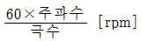
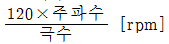
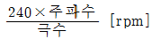
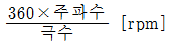
(정답률: 70%)
26. 스프링완충기의 설계시 고려하지 않아도 되는 것은?
- 정격하중
- 정격속도
- 엘리베이터의 용도
- 카자중
(정답률: 62%)
27. 비상용 엘리베이터의 설치에 관한 사항으로 옳은 것은?
- 예비전원을 반드시 설치하여야 한다.
- 일반용엘리베이터와 동작을 연계시키도록 한다.
- 보수가 용이하도록 전선 등은 노출 배선토록 한다.
- 원격조정이 가능하도록 하여야 한다.
(정답률: 66%)
28. 카 레일과 균형추 레일을 공용하여 하나의 브래킷으로 사용하는 경우 벽면으로부터의 높이는 몇 mm 이하로 하여야 하는가?
- 700
- 800
- 900
- 1,000
(정답률: 43%)
29. 엘리베이터의 조명전원을 설계할 때 인입선의 굵기 산정에 포함되지 않아도 되는 것은?
- 전선의 기계적 강도
- 전선로의 허용전류
- 누설전류
- 허용전압강하
(정답률: 69%)
30. 교류에 대한 속도제어 방법 중 전압과 주파수를 동시에 변환시켜 제어하는 교류제어방식은?
- 교류 1단 제어
- 교류 2단 제어
- 교류 궤환 제어
- 가변전압 가변주파수 제어
(정답률: 70%)
31. “중앙개폐식(CO)일 때 타는 곳의 문은 (Ⓐ)cm 이내까지 닫혀졌을 때 기동하고, 또한 타는 곳에서는 (Ⓑ)cm 이상 열려지지 않아야 한다.“ Ⓐ, Ⓑ에 알맞은 것은?
- Ⓐ 2, Ⓑ 5
- Ⓐ 2, Ⓑ 2
- Ⓐ 5, Ⓑ 2
- Ⓐ 5, Ⓑ 5
(정답률: 35%)
32. 권상용 와이어 로프를 승강기에 적용 시킬 때 적합하지 않은 것은?
- 직경은 공칭지름 6mm 이상으로 사용할 것
- 단부는 1본마다 강제 소켓트에 바비트 채움 또는 클램프 고정으로 할 것
- 승객용일 때 안전율은 10 이상으로 한다.
- 카 1대에 대해 3본 이상이나 권동식일 때는 2본 이상이다.
(정답률: 57%)
33. 유압 엘리베이터의 기계실에 관한 설명으로 틀린 것은?
- 유압 엘리베이터 기계실은 전용실로 구획한다.
- 기계실의 위치는 최상층으로 하여야 한다.
- 콘센트의 부착높이는 기름방벽보다 높게 한다.
- 기계실은 내화구조로 하여야 한다.
(정답률: 72%)
34. 권상기에 적용되는 주로프(Maim Rope)가 ø16일 때 다음 중 권상기 도르레의 직경으로 사용하여도 되는 것은?
- ø400
- ø480
- ø520
- ø760
(정답률: 59%)
35. 브레이크의 용량을 계산할 때 직접적인 관련이 없는 요소는?
- 마찰계수
- 브레이크 드럼의 속도
- 브레이크 제동압력
- 브레이크 드럼의 지름
(정답률: 50%)
36. 카 무게 1,500kg, 적재량 1,000kg, 제어케이블 무게 50kg, 오버밸런스율 45% 일 경우 균형추 무게는 몇 kg인가?
- 1,950
- 1,975
- 2,⑤0
- 2,075
(정답률: 49%)
37. 엘리베이터의 배열이 적절하지 못한 것은?
- 3대의 그룹에 대해서는 일렬로 배열하는 것이 가장 좋다.
- 4대의 그룹에 대해서는 일렬로 배열하는 것이 가장 좋다.
- 6대의 그룹에 대해서는 3대씩 2줄로 배열하는 것이 가장 좋다.
- 8대의 그룹에 대해서는 4대씩 2줄로 배열하는 것이 가장 좋다.
(정답률: 73%)
38. 인버터 방식의 엘리베이터에서 고조파의 영향을 줄이기 위한 방법과 거리가 가장 먼 것은?
- 누전차단기를 설치한다.
- 기계실 주변에 TV 안테나 설치를 멀리한다.
- 승강기 전용 변압기를 설치 사용한다.
- 인버터 장치와 각종 통신기기 혹은 제어라인 등의 접지선을 각각 독립 배선한다.
(정답률: 62%)
39. 다음의 안전장치 중에서 운행구간을 초과하여 운행되는 것을 방지할 목적으로 설치하는 것이 아닌 것은?
- 리미트 스위치
- 완충기
- 감속스위치
- 상승방향 과속방지장치
(정답률: 37%)
40. 정격속도 90m/min인 유입완충기의 필요 최소 행정은 몇 mm인가?
- 138
- 152
- 186
- 197
(정답률: 53%)
3과목: 일반기계공학
41. 저항 점용접법은 사용이 간편하고 용접 자동화가 용이하므로 자동차 산업현장에서 널리 이용 되고 있다. 이러한 점용접의 품질을 평가하는 방법이 아닌 것은?
- 피로시험
- 마멸시험
- 비틀림 시험
- 인장시험
(정답률: 54%)
42. 회전운동을 직선운동으로 변환 시키는 기어는?
- 스큐우 기어
- 래크와 피니언
- 인터어널 기어
- 크라운 기어
(정답률: 75%)
43. 유압장치에 사용되는 유압유 저장용의 용기로 어큐뮬레이터라고도 하는 유압 부속기기는?
- 축압기
- 유압 필터
- 증압기
- 유압 유니트
(정답률: 64%)
44. 동 및 동합금에 관한 다음 설명 중 바른 것은?
- 황동은 구리와 주석의 합금이다.
- 전기 전도율이 은(Ag) 다음으로 크다.
- 청동은 구리와 아연의 합금이다.
- 인청동은 내마멸성이 나쁘며 베어링으로 사용할 수 없다.
(정답률: 65%)
45. 와셔의 사용목적으로 적합하지 못한 것은?
- 볼트의 구멍의 지름이 볼트보다 너무 클 때
- 볼트가 받는 전단응력을 감소시키려 할 때
- 볼트 시트 면의 재료가 약해서 넓은 면으로 지지하여야 할 때
- 진동이나 회전이 있는 곳의 볼트나 너트의 풀림 방지
(정답률: 41%)
46. 인장강도가 4200 kgf/mm2 인 연강봉이 있다.안전율이 10이면 허용 응력은 몇 kgf/mm2인가?
- 42000
- 42
- 280
- 420
(정답률: 74%)
47. 다음 중 유압의 기초적인 원리라 할 수 있는 파스칼의 원리에 대한 설명으로 틀린 것은?
- 유체의 압력은 면에 직각으로 작용한다.
- 각 점에서의 압력은 모든 방향으로 같다.
- 가한 압력은 유체각부에 같은 세기로 전달된다.
- 유체의 압력은 압력을 직접 받는 면이 가장 크다.
(정답률: 68%)
48. 50,000kgf-cm의 굽힘 모멘트를 받는 단순보의단면계수가 100cm3이면 이 보에 발생 되는 굽힘 응력(kgf/cm2)은?
- 250
- 500
- 750
- 1000
(정답률: 81%)
49. 소성가공의 종류가 아닌 것은?
- 인발가공
- 압출가공
- 전단가공
- 밀링가공
(정답률: 53%)
50. 냉간 가공의 특징이 아닌 것은?
- 가공면이 매끄럽고 곱다.
- 가공도가 크다.
- 연신율이 작아진다.
- 제품의 치수가 정확하다.
(정답률: 39%)
51. 금속재료의 물리적 성질이 아닌 것은?
- 비중
- 열전도율
- 취성
- 선팽창계수
(정답률: 54%)
52. 유니버셜 이음(universal ioint) 설명으로 올바른 것은?
- 2축이 평행하고 있을 때에 사용하는 클러치 이다.
- 2축이 직교할 때에 사용되고 운전 중 단속할 수 있다.
- 2축이 교차하고 있을 때에 사용하는 크랭크 축이다
- 2축이 교차하는 경우에 사용되는 커플링의 일종이다.
(정답률: 63%)
53. 압출가공에 대한 설명이다. 거리가 먼 것은?
- 속이 빈 용기를 만드는 데는 충격압출이 적합하다.
- 압출에 의한 표면 결함은 소재온도와 가공 속도를 늦춤으로써 방지할 수 있다.
- 단면의 형태가 다양한 직선, 곡선 제품의 생산이 가능하다.
- 납 파이프나 건전지 케이스를 생산하는데 적합하다.
(정답률: 46%)
54. 기어에서 언더컷 현상이 일어나는 원인은?
- 잇수비가 아주 클 때
- 잇수가 많을 때
- 이 끝이 둥글 때
- 이 끝 높이가 클 때
(정답률: 69%)
55. ＃6306 레이디얼 볼베어링의 안지름은?
- 6mm
- 30mm
- 12mm
- 36mm
(정답률: 49%)
56. 화염온도가 가장 높고 발열량에 비하여 가격도 저렴하여 가스용접에 많이 사용하는 가스는?
- 수소
- 프로판
- 일산화탄소
- 아세틸렌
(정답률: 66%)
57. 잇수가 40개, 모듈 4인 표준기어를 깎고자 할 때 기어 바깥의 지름은 몇 mm인가?
- 84
- 120
- 160
- 168
(정답률: 46%)
58. 기어의 각부 명칭에 대한 설명 중 틀린 것은?
- 피니언 : 서로 물리는 2개의 기어 중 작은 것
- 원주 피치 : 피치 원주에서 측정한 하나의 이 에서 다음 이까지의 거리
- 모듈 : 피치원 지름을 잇수로 나눈 값
- 지름 피치 : 기어의 잇수를 이뿌리 원으로 나눈 값
(정답률: 55%)
59. 강화유리란 보통판유리를 600ﾟC 정도의 가열온도로 열처리한 것인데 다음 중 그 특징이라고 볼 수 없는 것은?
- 유리파편의 결정질이 크다.
- 유리의 강도가 크다.
- 곡선유리의 자유화가 쉽다.
- 안전성이 높다.
(정답률: 50%)
60. 다음 중 일반적으로 황동에 구멍 뚫기 작업에 사용하는 드릴의 날끝 각으로 가장 알맞은 것은?
- 90ﾟ ~ 120ﾟ
- 118ﾟ
- 100ﾟ
- 60ﾟ
(정답률: 64%)
4과목: 전기제어공학
61. 다음 중 단위계단 함수 u(t)의 그래프는?
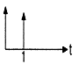
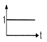
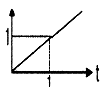
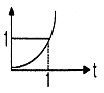
(정답률: 72%)
62. 자동제어계의 안정성의 척도가 되는 양은?
- 감쇠비
- 오차
- 오버 슛(over shoot)
- 지연시간
(정답률: 64%)
63. 그림과 같은 회로도의 논리식은 어떻게 되는가?
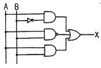
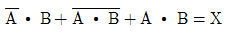
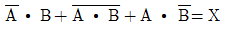
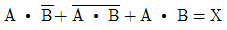
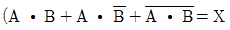
(정답률: 58%)
64. 그림과 같은 회로의 합성저항은 몇 Ω 인가?
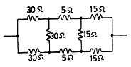
- 25
- 30
- 35
- 50
(정답률: 48%)
65. 변압기의 정격 1차 전압의 의미를 바르게 설명한 것은?
- 정격 2차 전압에 권수비를 곱한 것이다.
- 1/2부하를 걸었을 때의 1차 전압이다.
- 무부하일 때의 1차 전압이다.
- 정격 2차 전압에 효율을 곱한 것이다.
(정답률: 61%)
66. 서보전동기에 대한 설명으로 틀린 것은?
- 정∙역운전이 가능하다.
- 직류용은 없고 교류용만 있다.
- 급가속 및 급감속이 용이하다.
- 속응성이 대단히 높다.
(정답률: 72%)
67. 어떤 제어계통을 부궤환 제어계통으로 만들면 오픈 루프(open loop)시스템 때보다 루프이득은 일반적인 경우 어떻게 되는가?
- 불변이다.
- 증가한다.
- 증가하다가 감소한다.
- 감소한다.
(정답률: 54%)
68. R - C 직렬회로의 임피던스를 나타내는 식은?
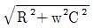
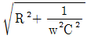
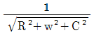
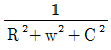
(정답률: 60%)
69. NAND 논리소자에 대한 진리표의 출력을 A 에서 D 까지 옳게 표현한 것은? (단, L 은 Low 이고, H 는 High 이다.)
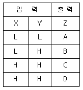
- A = L, B = H, C = H, D = H
- A = L, B = L, C = H, D = H
- A = H, B = H, C = H, D = L
- A = L, B = L, C = L, D = H
(정답률: 55%)
70. 목표값이 임의의 변화에 추종하도록 구성되어 있는 것을 무엇이라 하는가?
- 자동조정
- 추치제어
- 서보기구
- 비율제어
(정답률: 47%)
71. 콘덴서만의 회로에서 전압과 전류의 위상 관계는?
- 전압이 전류보다 180도 앞선다.
- 전압이 전류보다 180도 뒤진다.
- 전압이 전류보다 90도 앞선다.
- 전압이 전류보다 90도 뒤진다.
(정답률: 64%)
72. 출력 1kw, 효율 80%인 유도 전동기의 손실은 몇 W인가?
- 100
- 150
- 200
- 250
(정답률: 33%)
73. 다음 중 계측기의 제동장치가 될 수 있는 것은?
- 공기제동
- 전자제동
- 와류제동
- 베어링제동
(정답률: 37%)
74. 유도전동기의 역률을 개선하기 위하여 일반적으로 많이 사용되는 방법은?
- 조상기 병렬접속
- 콘덴서 병렬접속
- 조상기 직렬접속
- 콘덴서 직렬접속
(정답률: 75%)
75. 단위 S 는 무엇을 나타내는 단위인가?
- 컨덕턴스
- 리액턴스
- 자기저항
- 도전률
(정답률: 50%)
76. 그림은 전동기 속도제어의 한 방법이다. 전동기가 최대 출력을 낼 때, 다이리스터의 점호각은 몇 rad 이 되는가?
- 0
- π/6
- π/2
- π
(정답률: 39%)
77. 제어계의 입력과 출력이 서로 독립적인 제어계에 해당되는 것은?
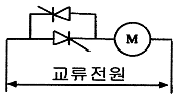
- 피드백 제어계
- 자동제어 제어계
- 개루프 제어계
- 페루프 제어계
(정답률: 43%)
78. 센서용 검출변환기 중 전압변화용 센서가 아닌 것은?
- 압전형
- 열지전력형
- 광전형
- 전리형
(정답률: 34%)
79. P I 제어동작은 프로세스제어계의 정상특성 개선에 흔히 사용된다. 이것에 대응하는 보상요소는?
- 동상 보상요소
- 지상 보상요소
- 진상 보상요소
- 지진상 보상요소
(정답률: 70%)
80. 전류의 화학작용을 이용하지 않은 것은?
- 전기도금
- 전지
- 전해연마
- 형광등
(정답률: 57%)